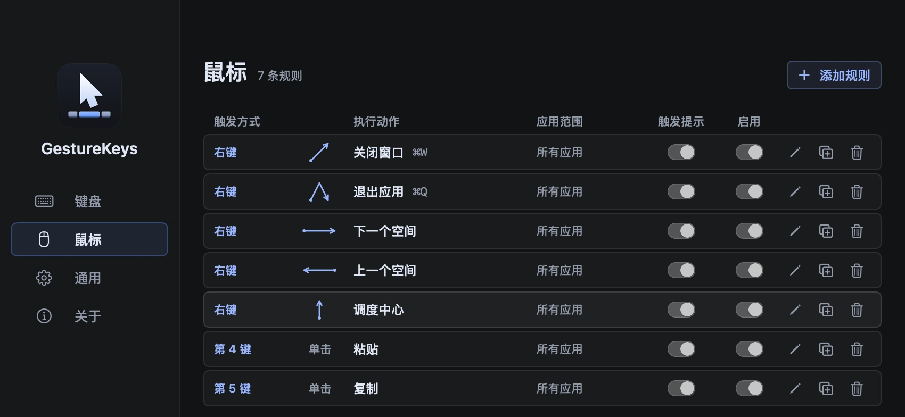
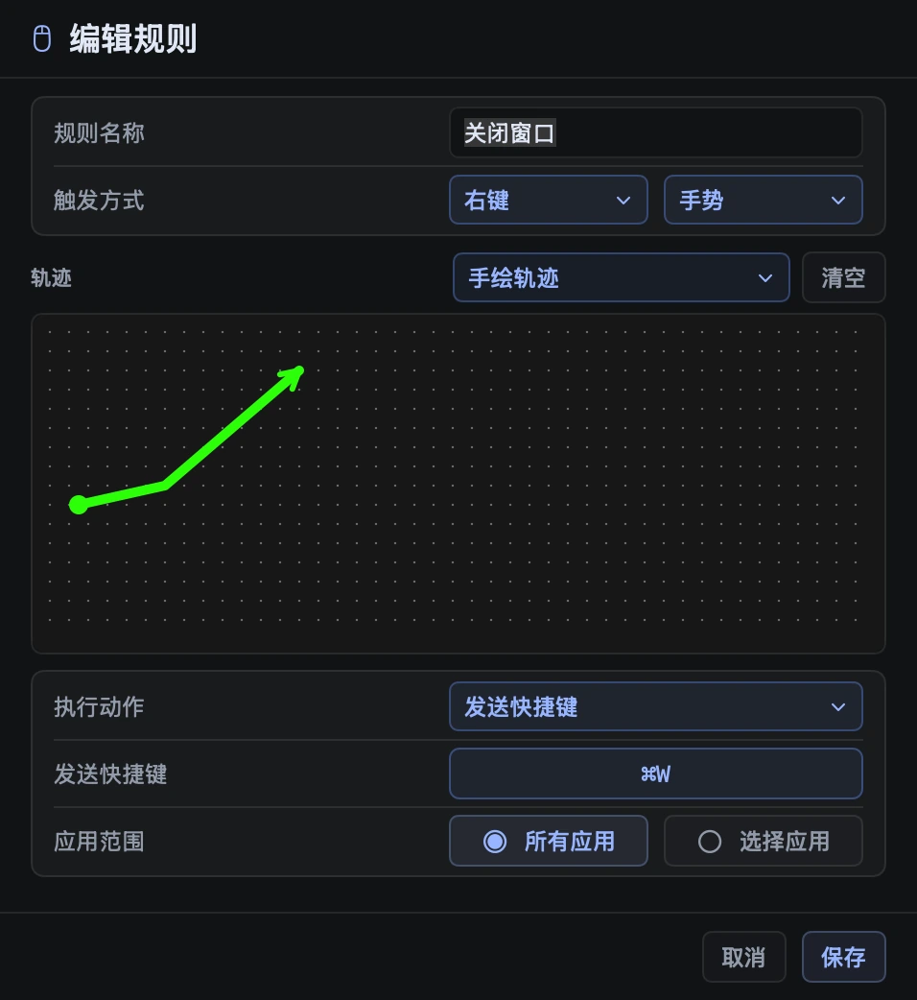

普通鼠标，也能画手势
按住右键画一笔，让当前 App 执行一个动作。可以选预设，也可以画你自己的轨迹。
- 右键画 V→退出当前 App
macOS 工具 · v0.7.2
按住右键往右上划，关掉当前标签页。按 ⌃1，回到上一页。常用动作，绑到你顺手的键和手势上。
macOS 13+ · Apple Silicon

按住右键画一笔，让当前 App 执行一个动作。可以选预设，也可以画你自己的轨迹。
侧键在浏览器里用来后退，到了访达就回上一级文件夹。不用手动切配置。
触发方式和动作可以分开选。想让鼠标按钮打开指定 App，或让自绘手势执行某个菜单的快捷键，都能自己配。

首次使用
GestureKeys.app 拖进「应用程序」。xattr -dr com.apple.quarantine /Applications/GestureKeys.app